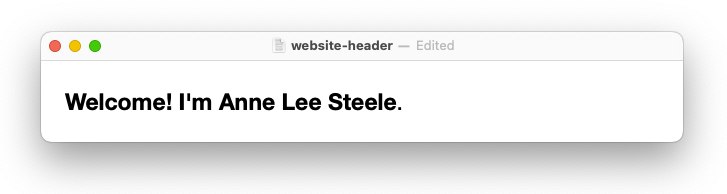

{%- assign page_paths = site.header_pages | default: default_paths -%}
<header>
  
  <div class="menu">
    <ul>
      {%- for path in page_paths -%}
        {%- assign my_page = site.pages | where: "path", path | first -%}
        {%- if my_page.title -%}
        <li><center><a href="{{ my_page.url | relative_url }}" class="folder">{{ my_page.title | escape }}</a></center></li>
        {%- endif -%}
      {%- endfor -%}
    </ul>
  </div>
</header>
